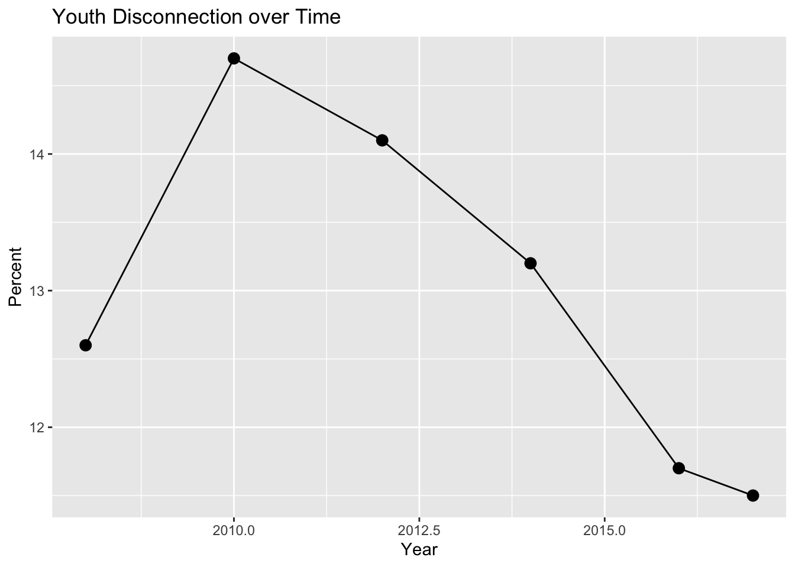
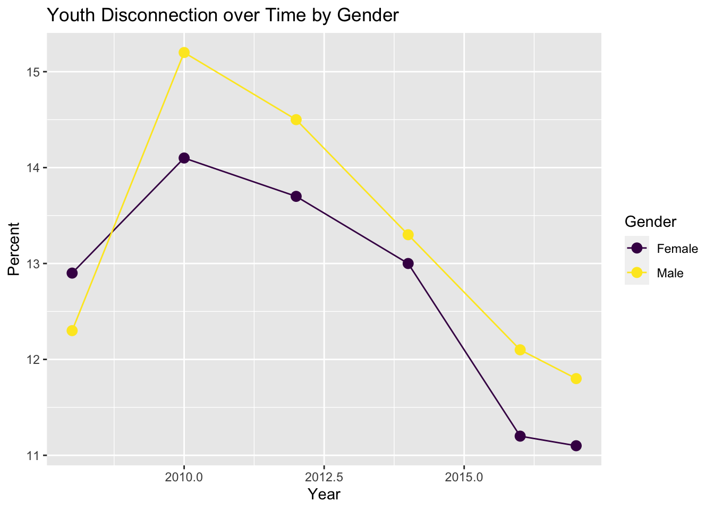
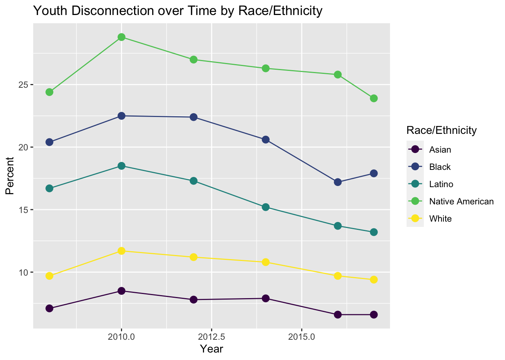
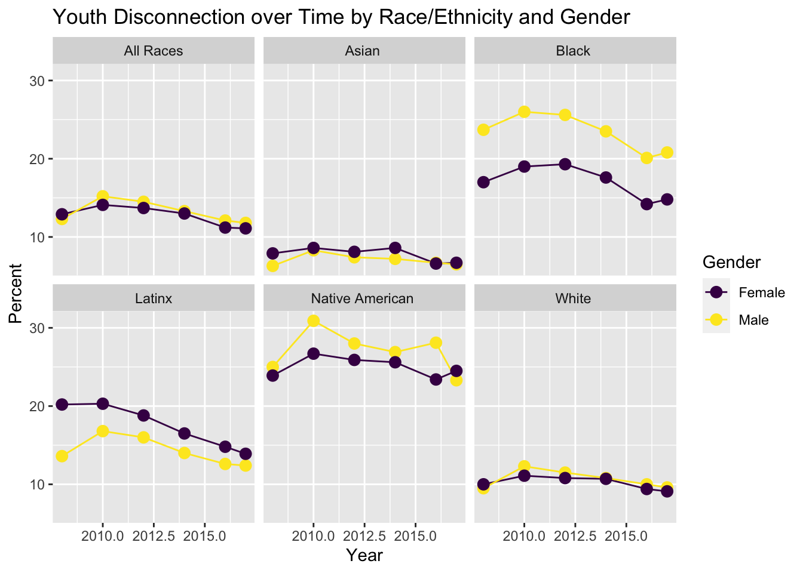
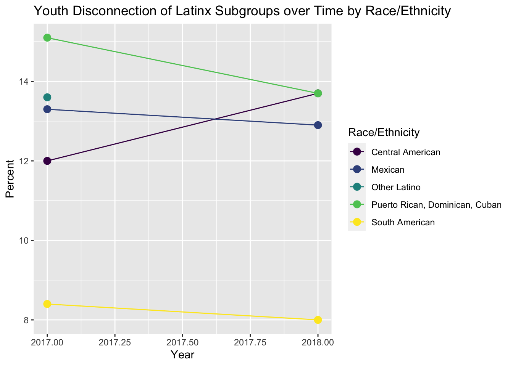
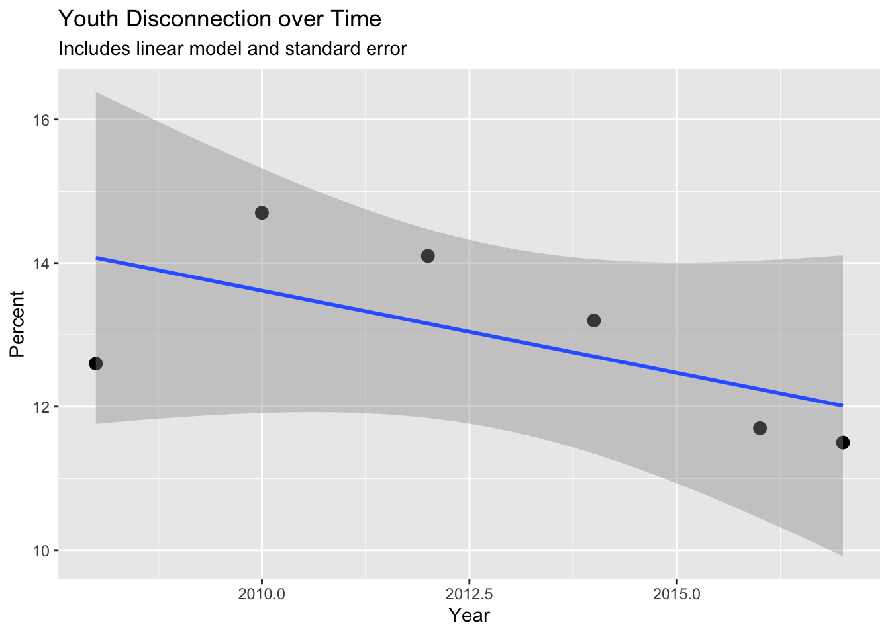
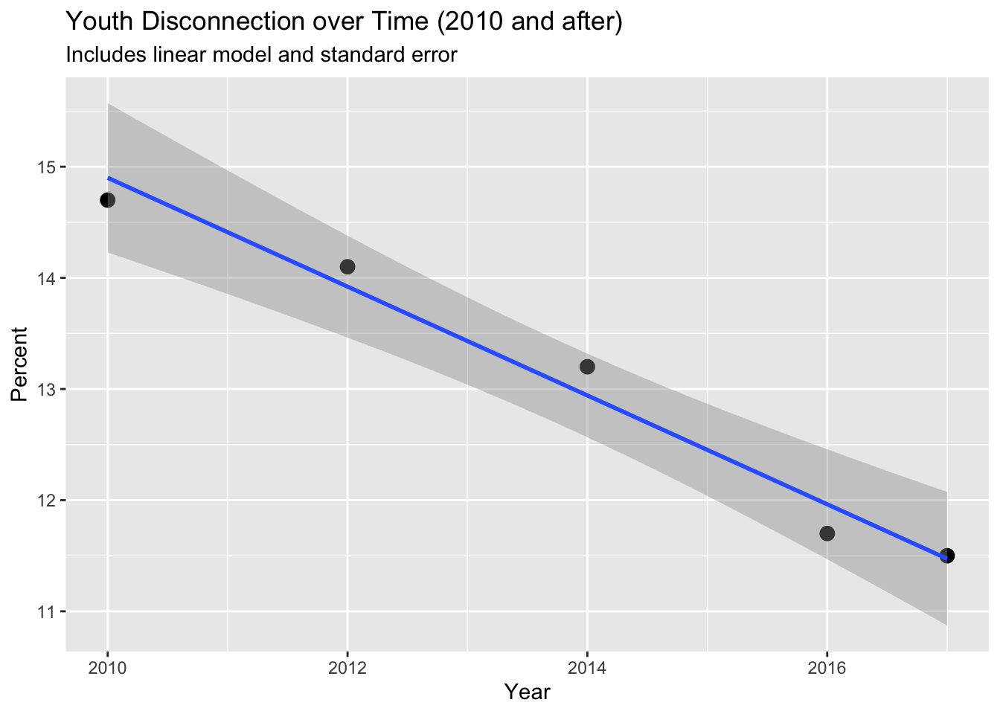

library(OCSdata)
library(tidyverse)
library(here)
library(pdftools)
library(tesseract)
library(magick)
library(knitr)
library(Kendall)
library(broom)CS: Example
Load packages
Prof Note
I would recommend packages be imported after the introduction, but this is very specific and not something anyone would lose credit for.
Introduction
In this case study, we seek to analyze the youth disconnection among minority groups within the United States. The disconnected youth are the young people who are between the ages of 16 and 24 who are neither working nor in school. Following the aftermath of the Great Recession in 2008, we witnessed a peak youth disconnection rate of 14.7 percent in 2010 which has since been trending downwards to as low as a youth disconnection rate of 11.5 percent in 2017. While analyzing racial and ethnic groups is imperative for viewing any evident disparities, we also intend on analyzing how gender may play a role in affecting the rates of disconnection. Seeing as how we can already see existing disparities between genders within the workforce, we also want to see to what extent, if at all, gender plays a role in youth disconnection among groups.
This specific period of young adulthood is one of the most critical in developing the necessary skills and capabilities required of them to be successful in adulthood and their professional careers as youth disconnection during this period stunts development and limits their potential. Measure of America, a nonpartisan project of the nonprofit Social Science Research, claims that “people who experience a period of disconnection as young adults go on to earn less and are less likely to be employed, own a home, or report good health by the time they reach their thirties”. Understanding how these trends among groups arise may be critical for finding solutions to preventing youth disconnection, and analyzing what groups may need more resources in order to prevent further prevent youth disconnection.
Prof Note
This introduction is missing citations! Statements that are not your own original thoughts must be cited. See Effective Communication lecture for possible ways to cite. We don’t care what format you use. We do care that you cite others’ work. Also, definitely feel free to find information on the topic beyond what was presented in class.
Questions
- How have youth disconnection rates in American youth changed since 2008?
- In particular, how has this changed for different gender and ethnic groups? Are any groups particularly disconnected?
- Does removing 2008 (pre-Great Recession time period) data points change our answer?
Prof Note
The third question here was their extension. Note that this is an ok extension all things considered. This was earlier in the quarter, a more straightforward dataset, there wasn’t as much to do as there is in our dataset. Explaining the why this is their focus in introduction would have been great.
The Data
The data set that we will be using for our case study is provided by two reports from the Measure of America project related to youth disconnect. The data provided will be in the form of images.
Data Import
In order to begin our analysis, we imported our raw data from the OCSdata library on youth disconnection.
# Data is imported so I get overwrite error when not commented - Adrian
# Download raw data files
# load_raw_data("ocs-bp-youth-disconnection", outpath = '.')
Prof Note
Reminder that you can control chunk behavior for each chunk within the curly braces. This also applies for the warnings that are displayed later on. Best to supress those in final HTML.
Since the raw data is in images, we need to convert to a usable R data set. We started with the major racial ethnic groups.
## Import data for major racial/ethnic groups
major_racial_ethnic_groups <- magick::image_read("data/Major_ethnic_groups_screenshot.png")
major_groups <- magick::image_ocr(major_racial_ethnic_groups)For Asian subgroups, we had to import the raw data for 2017 and 2018.
## Import data for Asian subgroups
# 2017 data
asian_sub_2017 <- image_read("data/asian_subgroups_2017.png")
asian_sub_2017_A <- image_read("data/asian_sub_2017_A.png")
asian_sub_2017_B <- image_read("data/asian_sub_2017_B.png")
asian_sub_2017_C <- image_read("data/asian_sub_2017_C.png")
asian_sub_2017 <- image_ocr(asian_sub_2017)
asian_sub_2017_A <- image_ocr(asian_sub_2017_A)
asian_sub_2017_B <- image_ocr(asian_sub_2017_B)
asian_sub_2017_C <- image_ocr(asian_sub_2017_C)
# 2018 data
asian_sub_2018_A <- image_read("data/asian_sub_2018_A.png")
asian_sub_2018_A <- image_ocr(asian_sub_2018_A)
asian_sub_2018_B <- image_read("data/asian_sub_2018_B.png")
asian_sub_2018_B <- image_ocr(asian_sub_2018_B)For Latinx subgroups, we also imported 2017 and 2018 data.
## Import data for Latinx subgroups
# 2017 data
latinx_imageA <- image_read("data/latinx_sub_2017_A.png")
latinx_imageB <- image_read("data/latinx_sub_2017_B.png")
latinx_imageC <- image_read("data/latinx_sub_2017_C.png")
latinx_sub_2017_A <- image_ocr(latinx_imageA)
latinx_sub_2017_B <- image_ocr(latinx_imageB)
latinx_sub_2017_C <- image_ocr(latinx_imageC)
# 2018 data
latinx_sub_2018 <- image_read("data/latinx_subgroups_2018.png")
latinx_sub_2018 <- image_ocr(latinx_sub_2018)Once the data import is complete, we saved our data.
# Save data
save(
major_groups,
asian_sub_2017,
asian_sub_2017_A,
asian_sub_2017_B,
asian_sub_2017_C,
latinx_sub_2017_A,
latinx_sub_2017_B,
latinx_sub_2017_C,
asian_sub_2018_A,
asian_sub_2018_B,
latinx_sub_2018,
file = "data/imported_data.rda")Data Wrangling
Now that we have our data properly imported, we need to wrangle our data in R so we can begin our analysis.
Prof Note
There is text to guide the viewer, clear code, and code comments as needed. I like this.
Major Group Data
To begin our data wrangling, we took the imported data that is in a single string and separated the data by new line characters and transformed it into a table.
# Separates string by new line and transforms into a table
major_groups <- major_groups |>
stringr::str_split(pattern = "\n") |>
unlist() |>
tibble::as_tibble()Now that our data has rows, we created columns Group and Year and assigned the corresponding values according to the data as well as normalizing the capitalization throughout the data set.
# Separate into columns Group and Year
major_groups <-
major_groups |>
tidyr::separate(col = value,
into = c("Group", "Years"), # Set column names
sep = "(?<=[[:alpha:]])\\s(?=[0-9])") # Separate after letter string; beginning numericsWarning: Expected 2 pieces. Missing pieces filled with `NA` in 1 rows [19].# Make capitalization format the same
major_groups <- major_groups |>
mutate(Group = stringr::str_to_title(Group))We have our data in two columns but need to separate our Years column into each individual year. We thus separated the column by every space character, assigned appropriate years for its corresponding values, and made the data values numeric.
# Separate `Years` into columns by individual years
major_groups <- major_groups |>
tidyr::separate(col = Years,
into = c("2008", "2010", "2012", "2014", "2016", "2017"), # Set column names
sep = " ") # Separate by spaces
# Remove empty rows
major_groups <- major_groups |>
tidyr::drop_na()
# Make data numeric
major_groups <- major_groups |>
mutate(
across(.cols = -Group,
~ str_remove(string = ., pattern = "\\.")), # Remove decimal points from string
across(.cols = -Group, as.numeric), # Convert to numeric
across(.cols = -Group, ~ . * 0.1) # Add decimal point back
)We have a lot of information in our Group column, so we separated that information and created two new columns, Race_Ethnicity and Gender, to make it easier to analyze our data.
# Create Race_Ethnicity column
major_groups <- major_groups |>
# First, create entries for `All_races`
mutate(Race_Ethnicity = dplyr::recode(Group, "United States" = "All_races",
"Female" = "All_races",
"Male" = "All_races"),
# Second, create entries for all other races by importing data from group column and removing gender
Race_Ethnicity = str_remove(string = Race_Ethnicity,
pattern = "Female|Male"))
# Create Gender column
major_groups <- major_groups |>
# Extract gender from `Group` column
mutate(Gender = str_extract(string = Group,
pattern = "Female|Male")) |>
# Assign `All' if gender was not in `Group`
mutate(Gender = replace_na(Gender, replace = "All"))Now that we have all of our data, we moved the columns containing years into rows and added a new column Percent to log the value contained in the, now former, year column.
# Puts years in rows instead of columns with percent values
major_groups_long <- major_groups |>
tidyr::pivot_longer(cols = contains("20"), # any column containing 20
names_to = "Year", # Assigns column for year
values_to = "Percent", # Assigns column for percent
names_prefix = "Perc_") |>
dplyr::mutate(Year = as.numeric(Year))Subgroup Data
Data Wrangling Functions
We wrangled the major group data but now have to wrangle the subgroup data, which is a little more complicated. We first created a make_rows function to take the imported raw data and convert it into a table with rows separated by new line characters.
# Create function to separate string into rows
make_rows <- function(text){
text |>
str_split("\n") |>
unlist() |>
as_tibble()
}We also created two functions clean_table and clean_table_2018 to clean our subgroup data just like the major group data – separating Group and Years columns, converting data to numeric, and creating Race_Ethnicity and Gender columns.
# Create function to clean 2017 subgroup data
clean_table <- function(table){
table |>
separate(col = value,
into = c("Group", "Percentage"), # Create column names
sep = "(?<=[[:alpha:]])\\s(?=[0-9])") |> # Split into columns after string of letters
drop_na() |> # Remove NA rows
# Make percentage data numeric
mutate(Group = str_to_title(Group)) |>
mutate(Percentage = str_remove(string = Percentage,
pattern = "\\.")) |> # Remove decimal points from string
separate(Percentage, c("Percent"), sep = " ") |> # Separate by space
mutate(Percent = as.numeric(Percent)) |> # Convert to numeric
mutate(Percent = Percent * 0.1) |> # Add back decimal point
# Create Race_Ethnicity column
mutate(Race_Ethnicity = recode(Group,
# Create entries for All_races
"United States" = "All_races",
"Female" = "All_races",
"Male" = "All_races")) |>
# Create entries for all other races by importing data from group column and removing gender
mutate(Race_Ethnicity = str_remove(string = Race_Ethnicity,
pattern = " Female| Male")) |>
# Create Gender column
mutate(Gender = str_extract(string = Group,
pattern ="Female|Male")) |> # Extract gender from `Group` column
mutate(Gender = replace_na(Gender, replace = "All")) # Assign `All' if gender was not in `Group`
}
# Create function to clean 2018 subgroup data
clean_table_2018 <- function(table){
table |>
separate(col = value,
into = c("Group", "Percent"), # Create column names
sep = "(?<=[[:alpha:]])\\s:\\s|\\s(?=[0-9])") |> # Split into columns after colon
mutate(Group = str_remove(string = Group,
pattern = ":")) |> # Remove colon
drop_na() |> # Remove NA rows
# Make percentage data numeric
mutate(Group = str_to_title(string = Group)) |>
mutate(Percent = str_remove(string = Percent,
pattern = "\\.")) |> # Remove decimal points from string
mutate(Percent = as.numeric(Percent)) |> # Convert to numeric
mutate(Percent = Percent * 0.1) |> # Add back decimal point
# Create Race_Ethnicity column
mutate(Race_Ethnicity = str_replace(string = Group,
pattern = "Men|Women",
replacement = "missing")) |> # Replace gender with missing
mutate(Race_Ethnicity = na_if(Race_Ethnicity, "missing")) |> # Make missing values NA
fill(Race_Ethnicity, .direction = "down") |> # Fill Race/Ethnicity in missing fields
# Create Gender column
mutate(Gender = str_extract(string = Group,
pattern = "Men|Women")) |> # Extract gender from `Group` column
mutate(Gender = replace_na(Gender, replace = "All")) # Assign `All' if gender was not in `Group`
}Asian Subgroup Data
We ran our make_rows function on our raw data and combined the initially wrangled 2017 data.
## Asian subgroup data
# 2017 data
# Apply make_rows function to subgroup data
asian_sub_2017 <- make_rows(asian_sub_2017)
asian_sub_2017_A <- make_rows(asian_sub_2017_A)
asian_sub_2017_B <- make_rows(asian_sub_2017_B)
asian_sub_2017_C <- make_rows(asian_sub_2017_C)
# Combine data
asian_sub_2017 <- bind_rows(asian_sub_2017_A,
asian_sub_2017_B,
asian_sub_2017_C)Similarly, we applied make_rows to 2018 data.
# 2018 data
# Combine data
asian_sub_2018 <- str_c(asian_sub_2018_A, asian_sub_2018_B)
# Apply make_rows function
asian_sub_2018 <- make_rows(asian_sub_2018)We next cleaned both the 2017 and 2018 data using our clean_table and clean_table_2018 functions.
# Apply clean table function to both years data
asian_sub_2017 <- clean_table(asian_sub_2017)Warning: Expected 2 pieces. Missing pieces filled with `NA` in 3 rows [17, 22,
28].asian_sub_2018 <- clean_table_2018(asian_sub_2018)Warning: Expected 2 pieces. Missing pieces filled with `NA` in 6 rows [4, 8, 15, 19, 21,
23].The imported data was missing part of the data, so we manually added it back in as well as created a Year column.
# Add missing data
asian_sub_2018 <- asian_sub_2018 |>
add_row(Group = "Asian", Percent = 6.2,
Race_Ethnicity = "Asian", Gender = "All") |>
add_row(Group = "Asian", Percent = 6.4,
Race_Ethnicity = "Asian", Gender = "Men") |>
add_row(Group = "Asian", Percent = 6.1,
Race_Ethnicity = "Asian", Gender = "Women")
# Add years to data
asian_sub_2017 <- asian_sub_2017 |>
mutate(Year = 2017)
asian_sub_2018 <- asian_sub_2018 |>
mutate(Year = 2018)Since the naming convention for males and females different across the 2017 and 2018 data, we standardized the Gender column to only contain Male and Female entries and then combined the data into one data set, and once again moved the years into rows and added a Percent column, just like our major group data.
# Make Male/Female the values for gender across both datasets
asian_sub_2018 <- asian_sub_2018 |>
mutate(across(.cols = c(Gender, Group),
~ str_replace(string = .,
pattern = "Men",
replacement = "Male")),
across(.cols = c(Gender, Group),
~ str_replace(string = .,
pattern = "Women",
replacement = "Female")))
# Combine 2017 and 2018 data
asian_subgroups <- bind_rows(asian_sub_2017, asian_sub_2018)
# Add missing categories
asian_subgroups <- asian_subgroups |>
select(-Group) |>
pivot_wider(names_from = Year,
values_from = Percent) |>
pivot_longer(cols = -c(Race_Ethnicity, Gender),
names_to = "Year",
values_to= "Percent")Latinx Subgroup Data
To wrangle our Latinx subgroup data, we followed the same steps as our Asian subgroup data – applying make_rows, clean_table, and clean_table_2018 functions, standardizing the Gender naming convention, combining 2017 and 2018 data, and moving the years into rows while adding a Percent column. For the Latinx data, we also appropriately labeled the Puerto Rican, Dominican, Cuban groups and cleaned the names for Latino/Latina group.
## Latinx subgroup data
# 2017 data
# Combine data
latinx_sub_2017 <- stringr::str_c(latinx_sub_2017_A,
latinx_sub_2017_B,
latinx_sub_2017_C)
# Fix typo
latinx_sub_2017 <- latinx_sub_2017 |>
str_replace(pattern = "DR, Cuban Female 15.7\nPR", # Identify typo
replacement = "DR, Cuban Male 15.7\nPR") # Replace gender
# Apply functions to Latinx data
latinx_sub_2017 <- make_rows(latinx_sub_2017)
latinx_sub_2017 <- clean_table(table = latinx_sub_2017)Warning: Expected 2 pieces. Missing pieces filled with `NA` in 1 rows [19].# 2018 data
# Clean the data string
latinx_sub_2018 <- str_replace_all(string = latinx_sub_2018,
pattern = "\\s:\n{2}|\n{2}", #remove two newline characters
replacement = " ")
# Apply make_rows function
latinx_sub_2018 <- make_rows(latinx_sub_2018)
# Apply clean table function
latinx_sub_2018 <- clean_table_2018(latinx_sub_2018)Warning: Expected 2 pieces. Missing pieces filled with `NA` in 1 rows [12].# Create function to fix naming issues
fix_latinx_naming <- function(table){
table |>
# Appropriately label Puerto Rican, Dominican, Cuban group
mutate(Group = str_replace(string = Group,
pattern = "Pr, Dr, Cuban",
replacement = "Puerto Rican, Dominican, Cuban"),
Race_Ethnicity = str_replace(string = Race_Ethnicity,
pattern = "Pr, Dr, Cuban",
replacement = "Puerto Rican, Dominican, Cuban"))
}
# Apply function to both data sets
latinx_sub_2017 <- fix_latinx_naming(latinx_sub_2017)
latinx_sub_2018 <- fix_latinx_naming(latinx_sub_2018)
# Add missing data
latinx_sub_2018 <- latinx_sub_2018 |>
add_row(Group = "Latinx", Percent = 12.8,
Race_Ethnicity = "Latinx", Gender = "All") |>
add_row(Group = "Latinx", Percent = 12.3,
Race_Ethnicity = "Latinx", Gender = "Men") |>
add_row(Group = "Latinx", Percent = 13.3,
Race_Ethnicity = "Latinx", Gender = "Women")
# Make Male/Female the values for gender across both datasets
latinx_sub_2018 <- latinx_sub_2018 |>
mutate(across(.cols = c(Gender, Group),
~ str_replace(string = ., pattern = "Men", replacement = "Male")),
across(.cols = c(Gender, Group),
~ str_replace(string = ., pattern = "Women", replacement = "Female")))
# Add years to data
latinx_sub_2017 <- latinx_sub_2017 |>
mutate(Year = 2017)
latinx_sub_2018 <- latinx_sub_2018 |>
mutate(Year = 2018)
# Combine 2017 and 2018 data
latinx_subgroups <- bind_rows(latinx_sub_2017, latinx_sub_2018)
# Add missing categories
latinx_subgroups <- latinx_subgroups |>
select(-Group) |>
pivot_wider(names_from = Year,
values_from = Percent) |>
pivot_longer(cols = -c(Race_Ethnicity, Gender),
names_to ="Year" ,
values_to="Percent")
# Clean up Latinx group names
latinx_subgroups <- latinx_subgroups |>
# Convert Latino/Latina to Latinx
mutate(Race_Ethnicity = replace(Race_Ethnicity, Race_Ethnicity == "Latina", "Latinx")) |>
mutate(Race_Ethnicity = replace(Race_Ethnicity, Race_Ethnicity == "Latino", "Latinx")) |>
drop_na()Exploratory Data Analysis
Prof Note
Note that plots are clear, have titles, it’s clear what’s plotted, and there’s a corresponding interpretation guiding the reader. This is all good! These could be improved by having more informative titles that make clear to the viewer what the take-home message is and by handling years as factors.
To get a glance of our overall data set, we plotted overall youth disconnection over time in the United States.
major_groups_long |>
filter(Gender == "All", Race_Ethnicity == "All_races") |>
ggplot(aes(x = Year, y = Percent)) +
geom_line(size = 0.5) +
geom_point(size = 3) +
labs(
title = "Youth Disconnection over Time",
x = "Year")Warning: Using `size` aesthetic for lines was deprecated in ggplot2 3.4.0.
ℹ Please use `linewidth` instead.
We are able to visualize that from 2008 to 2010 there was an increase in youth disconnect; however, after 2010, there seems to be a consistent downtrend in youth disconnect.
To account for differences in gender, we plotted overall youth disconnection over time by gender.
major_groups_long |>
filter(Gender != "All", Race_Ethnicity == "All_races") |>
ggplot(aes(x = Year, y = Percent, color = Gender)) +
geom_line(size = 0.5) +
geom_point(size = 3) +
scale_color_viridis_d() +
labs(
title = "Youth Disconnection over Time by Gender"
)
Initially in 2008, females faced more disconnect than males. However, throughout the next years, males consistently faced greater disconnect that females. Both male and female disconnect trended downwards 2010 and after.
We then separated major groups by race/ethnicity and visualized youth disconnect over time.
major_groups_long |>
filter(Gender == "All", Group != "United States") |>
ggplot(aes(x = Year, y = Percent, color = Race_Ethnicity)) +
geom_line(size = 0.5) +
geom_point(size = 3) +
scale_color_viridis_d() +
labs(
title = "Youth Disconnection over Time by Race/Ethnicity",
color = "Race/Ethnicity"
)
We can see that Native Americans faced the most youth disconnect at about 25% and Asian faced the least with about 7.5% throughout all years in our data set. Overall, there is a small downtrend throughout the pass years in all races/ethnicities 2010 and after.
We visualized male/female youth disconnection by race/ethnicity across the observed years.
major_groups_long |>
filter(Gender != "All") |> # Filter for only Male and Female
# Combine Latino and Latina into Latinx
mutate(Race_Ethnicity = replace(Race_Ethnicity, Race_Ethnicity == "Latina ", "Latinx")) |>
mutate(Race_Ethnicity = replace(Race_Ethnicity, Race_Ethnicity == "Latino ", "Latinx")) |>
#renaming all races column
mutate(Race_Ethnicity = replace(Race_Ethnicity, Race_Ethnicity == "All_races", "All Races")) |>
# Plot scatter line plot of Percent vs Year by Gender and Ethnicity
ggplot(aes(x = Year, y = Percent, color = Gender)) +
geom_line(size = 0.5) +
geom_point(size = 3) +
facet_wrap(~Race_Ethnicity, nrow = 2) +
scale_color_viridis_d() +
labs(
title = "Youth Disconnection over Time by Race/Ethnicity and Gender"
)
Gender does not seem to affect the percentage much except in Black, Latinx, and Native American groups where there is a marginal difference. However, the main indicator in determining youth disconnection seems to be stronger aligned to Race/Ethnicity as that is where we see the largest disparity, while gender has smaller differences within a group.
Taking a deeper dive into the Latinx group, we visualized youth disconnection of the different subgroups within the Latinx group.
latinx_subgroups |>
filter(Gender == "All", Race_Ethnicity != "Latinx") |> # Filter by overall not specific gender
# Plot Percent vs Year by Ethnicity
ggplot(aes(x = as.numeric(Year), y = Percent, color = Race_Ethnicity)) +
geom_line(size = 0.5) +
geom_point(size = 3) +
scale_color_viridis_d() +
labs(
title = "Youth Disconnection of Latinx Subgroups over Time by Race/Ethnicity",
color = "Race/Ethnicity",
x = "Year"
)
Most groups have a relatively similar youth disconnection percentage, however, the South American group clearly has the lowest rate of youth disconnection at around 8% while Puerto Rico, Cuba, Dominican Republic have the highest with around 14.5% across 2017 and 2018.
Taking a deeper dive into the Asian group, we visualized youth disconnection of the different subgroups within the Asian group.
asian_subgroups |>
filter(Gender == "All", Race_Ethnicity != "All_races") |> # Filter by overall not specific gender
# Plot Percent vs Year by Ethnicity
ggplot(aes(x = as.numeric(Year), y = Percent, color = Race_Ethnicity)) +
geom_line(size = 0.5) +
geom_point(size = 3) +
scale_color_viridis_d() +
labs(
title = "Youth Disconnection of Asian Subgroups over Time by Race/Ethnicity",
color = "Race/Ethnicity",
x = "Year"
)Warning: Removed 3 rows containing missing values (`geom_line()`).Warning: Removed 3 rows containing missing values (`geom_point()`).
Most groups are in the 4-7% range for youth disconnection percentage; however, China has the lowest at about 4% and Hmong and Cambodia have the highest at about 13% across 2017 and 2018.
Data Analysis
We graphed youth disconnection over time with a line of best-fit layered on top of it.
major_groups_long |>
# Scatterplot with linear model for overall youth disconnection over time
filter(Gender == "All", Race_Ethnicity == "All_races") |>
ggplot(aes(x = Year, y = Percent)) +
geom_point(size = 3) +
geom_smooth(method = "lm") +
labs(
title = "Youth Disconnection over Time",
subtitle = "Includes linear model and standard error",
x = "Year")`geom_smooth()` using formula = 'y ~ x'
The line of best-fit exhibits a slight negative relationship, showing there is some correlation with youth disconnection and time; however, there is a decent amount of standard error throughout, which may be due to the 2008 data point defying the trend of the other data points.
To test our hypothesis that youth disconnection does not have a decreasing trend over time, we did a Mann-Kendall test for monotonicity.
# M-K test
major_groups_long |>
filter(Gender == "All", Race_Ethnicity == "All_races") |>
pull(Percent) |>
MannKendall() |>
tidy()# A tibble: 1 × 5
statistic p.value kendall_score denominator var_kendall_score
<dbl> <dbl> <dbl> <dbl> <dbl>
1 -0.600 0.133 -9 15.0 28.3We see there the p-value is 13.3% percent, which is not statistically significant at the traditional 5% level. This means our data is likely not monotonic and we would fail to reject our null hypothesis that youth disconnection is decreasing over time.
Knowing that the Great Recession occurred in 2008 and could provide an anomaly in our data, we ran a linear model on the data for 2010 and after.
# Scatterplot with linear model for overall youth disconnection over time after 2010
major_groups_long |>
filter(Gender == "All", Race_Ethnicity == "All_races", Year != 2008) |>
ggplot(aes(x = Year, y = Percent)) +
geom_point(size = 3) +
geom_smooth(method = "lm") +
labs(
title = "Youth Disconnection over Time (2010 and after)",
subtitle = "Includes linear model and standard error",
x = "Year")`geom_smooth()` using formula = 'y ~ x'
This graph seems to show a stronger linear relationship between youth disconnection over time as there is a steeper slope and less standard error than our first linear model visualization.
Again, to test our hypothesis that youth disconnection does not have a decreasing trend over time for 2010 and after, we did another Mann-Kendall test.
# M-K test for data after 2008
major_groups_long |>
filter(Gender == "All", Race_Ethnicity == "All_races", Year != 2008) |>
pull(Percent) |>
MannKendall() |>
tidy()# A tibble: 1 × 5
statistic p.value kendall_score denominator var_kendall_score
<dbl> <dbl> <dbl> <dbl> <dbl>
1 -1 0.0275 -10 10 16.7This time, the p-value is 2.75% and significant at the 5% level. Thus, this data set is likely monotonic and we would reject the null hypothesis that there is no decreasing trend between youth disconnection and time.
Prof Note
Model is not fully quantified nor explained in the context of the data. Be sure that if you’re stating numbers, you’re contextualizing them. Be sure if you’re stating things that are true, that you’re quantifying them when possible.
Results/Discussion
Through our exploratory data analysis, we observed that there does seem to be a decreasing trend of youth disconnection in the United States over the time frame of our data with the 2008 data being a slight anomaly. The decreasing trend with the exception of the initial 2010 spike remained generally consistent regardless of separation by gender, race/ethnicity, and both as seen through out first four visualizations. Although the trend is fairly consistent, there are additional takeaways from our visualizations.
Race/ethnicity is a major determinant in the magnitude of youth disconnection rates while gender is a much weaker determinant. Through our third visualization we see that the Native American group has a youth disconnection percentage of about 25%, which is over three time the lowest group, Asian, at about 7.5%. The Black group, although not as high as Native American, has a youth disconnection rate higher than the overall average across the years at about 20% versus 13%. Additionally, every group’s rate is 2-5% different from the nearest group with no two groups being similar to each other. This leads us to believe that although a decreasing trend is apparent across all groups, groups still have differences in how disconnected their youth are. Gender, on the other hand, does not show the same disparity. Our second visualization shows that males may be more disconnected, but when broken down into race/ethnicity in our fourth visualization we see the effect of gender depends greatly on the race/ethnic group. Females are more disconnected in Latinx and Asian groups, while the youth disconnection rate is fairly similar across gender overall and in the Asian and White group. The Black group has the most interesting data where males are fairly more disconnected than females but even in other groups such as Latinx and Native American where there is a difference in female and male disconnection, it is not a major difference.
In taking a deeper dive into the Latinx and Asian subgroups in visualizations five and six, it can be seen that there are not big differences in youth disconnection between subgroups except in two cases. The South American subgroup has a substantially lower rate at about 8% versus the 12-15% range that the other Latinx subgroups are in. Oppositely, Hmong and Cambodia groups have a much higher youth disconnection rate at about 13% versus its Asian peers in the 4-7% range.
To quantify our observations in our exploratory data analysis, we created a linear model for our major group data and performed a Mann-Kendall test. The linear model shows a decreasing trend in youth disconnection rate over time but it does not seem to be a very strong relationship and has relatively high standard error. When performing the Mann-Kendall test, the p-value was 13.3%, which is not statistically significant at the 5% level, implying that there is not a monotonic trend in the data. We decided to create a second linear model and Mann-Kendall test without the 2008 data since youth disconnection likely increased in 2010 due to the Great Recession that the United States faced. When doing this, a much stronger decreasing trend can be seen in the linear model and the Mann-Kendall test has a p-value of 2.75%, which is statistically significant at the 5%, implying that there is a monotonic trend in the data. In this case, a decreasing trend over time.
Conclusion
When taking account our entire data set, we cannot mathematically state that youth disconnection rates have changed over time, although visually and when excluding 2008 data, we can see that youth disconnection has been trending downwards starting in 2010 and after. This trend remains consistent across gender and race/ethnicity; however, there are still differences between groups in how disconnected are youth. Native American and Black are the most disconnected groups with Native American clearly have the highest youth disconnection rate. Although gender is not a major factor in determining youth disconnection in most cases, Black males are notably more disconnected than Black females. All other Latinx groups are more disconnected than the South American group and Hmong and Combodian groups are notably more disconnected than the other Asian groups. In conclusion, youth disconnection rates are experiencing a downward trend in 2010 and after and its magnitude is most heavily influenced by race/ethnicity in most cases.